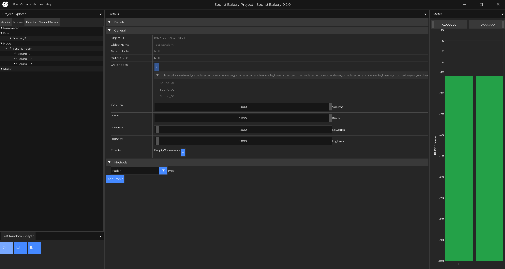

|
Sound Bakery
Open-source audio middleware for games
|
|
Sound Bakery
Open-source audio middleware for games
|


Sound Bakery is a free and open-source audio middleware tool featuring a complete authoring application and C/C++ API. Integrate with game engines with full support for asset management, sound selection, packaging, playback, and debugging.

From Blender and Krita to Godot, more and more developers are choosing open-source alternatives. Sound Bakery is the open choice for game audio.
| Effective | Modern | Open |
|---|---|---|
| Full authoring application, powerful API, and built-in multithreading make Sound Bakery a competitive choice. | Modern tech stack: GitHub CI/CD, C++ 20, CMake, and current libraries. | Free, modifiable, and MIT licensed. No restrictions on cost or usage. |
Sound Bakery aims to be a competitive, open alternative to Wwise and FMOD. Imagine owning your audio engine—customizing its look, tools, behavior, and more. Imagine receiving features and fixes from top studios, all collectively improving the industry's tools.
This is a difficult goal to achieve and we're not there yet. Before we get there, we have set smaller, more achievable goals. First, we prove that Sound Bakery can serve a game by helping ship small game jam projects. Then, we expand, supporting indie titles, then AA, then consoles and finally AAA. See our Roadmap for the milestones and how we get there.
Underpinning everything, our goal is to build a hardened runtime that can be trusted to tackle the most challenging of projects. No glitches, no ballooning, leaky memory, no stealing CPU time for longer than is needed. Sound Bakery should be fast, memory-smart, and stable. While Sound Bakery tries to innovate through its tooling and user experience, this should not loosen the requirements of the runtime.
Looking for binaries? Check out the Releases page for prebuilt binaries and source code.
Prerequisites:
Installation:
Full documentation is available at james-e-kelly.github.io/sound-bakery/dev/.
Sound Bakery welcomes contributions from developers of all backgrounds—UI/UX artists, DSP programmers, documentation writers, and more.
See our Contributing Guidelines for more information.
Sound Bakery is licensed under the [MIT License](LICENSE). You are free to use, modify, and distribute this software.
Sound Bakery stands on the shoulders of amazing open-source projects. We're grateful to the following libraries and their creators:
Audio
Rendering & Editor
Core Libraries
Testing & Documentation